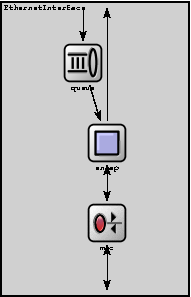
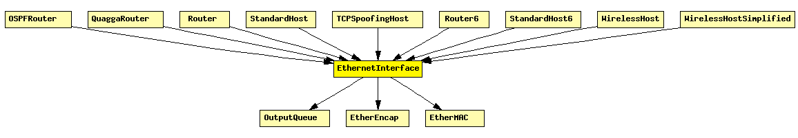

File: NetworkInterfaces/Ethernet/EthernetInterface.ned
Ethernet network interface. Corresponds to the prototype NetworkInterface. Complements EtherMAC and EtherEncap with an output queue for QoS and RED support.
See also: EthernetInterface2, EthernetInterfaceNoQueue
The following diagram shows usage relationships between modules, networks and channels. Unresolved module (and channel) types are missing from the diagram. Click here to see the full picture.
If a module type shows up more than once, that means it has been defined in more than one NED file.
| EtherEncap | Performs Ethernet II encapsulation/decapsulation. |
| EtherMAC | Ethernet MAC layer. MAC performs transmission and reception of frames. Doesn't do encapsulation/decapsulation; see EtherLLC and EtherEncap for that. |
| OutputQueue | Prototype for per-NIC output queues. Concrete queues can implement drop-tail, RED etc. policy. |
If a module type shows up more than once, that means it has been defined in more than one NED file.
| OSPFRouter | IP router. |
| QuaggaRouter | Quagga-based IP router. |
| Router | IP router. |
| StandardHost | |
| TCPSpoofingHost | IP host with TCPSpoof in the application layer. |
| Router6 | IPv6 router. |
| StandardHost6 | |
| WirelessHost | Models a host with one wireless (802.11b) card in infrastructure mode. This module is basically a StandardHost with an Ieee80211NicSTA added. It should be used in conjunction with WirelessAP, or any other AP model which contains Ieee80211NicAP. |
| WirelessHostSimplified | Models a host with one wireless (802.11b) card in infrastructure mode, but using a simplified NIC that does not support handovers. This module is basically a StandardHost with an Ieee80211NicSTASimplified added. It should be used in conjunction with WirelessAPSimplified, or any other AP model which contains Ieee80211NicAPSimplified. |
| Name | Type | Description |
|---|---|---|
| queueType | string |
| Name | Direction | Description |
|---|---|---|
| physIn | input | |
| netwIn | input | |
| physOut | output | |
| netwOut | output |
| Name | Type | Description |
|---|---|---|
| mac.promiscuous | bool | if true, all packets are received, otherwise only the ones with matching destination MAC address |
| mac.address | string | MAC address as hex string (12 hex digits), or "auto". "auto" values will be replaced by a generated MAC address in init stage 0. |
| mac.txrate | numeric | maximum data rate supported by this station (bit/s); actually chosen speed may be lower due to auto- configuration. 0 means fully auto-configured. |
| mac.duplexEnabled | bool | whether duplex mode can be enabled or not; whether MAC will actually use duplex mode depends on the result of the auto-configuration process (duplex is only possible with DTE-to-DTE connection). |
| mac.writeScalars | bool | enable/disable recording statistics in omnetpp.sca |
| encap.writeScalars | bool | enable/disable recording statistics in omnetpp.sca |
module EthernetInterface parameters: queueType: string; gates: in: physIn; in: netwIn; out: physOut; out: netwOut; submodules: queue: queueType like OutputQueue; display: "i=block/queue;p=92,71;q=l2queue"; mac: EtherMAC; parameters: queueModule = "queue", txQueueLimit = 1; // queue sends one packet at a time display: "i=block/rxtx;p=116,231"; encap: EtherEncap; display: "i=block/square;p=116,151"; connections: netwIn --> queue.in; queue.out --> encap.upperLayerIn; netwOut <-- encap.upperLayerOut display "m=n"; encap.lowerLayerOut --> mac.upperLayerIn; encap.lowerLayerIn <-- mac.upperLayerOut; mac.physIn <-- physIn; mac.physOut --> physOut; endmodule